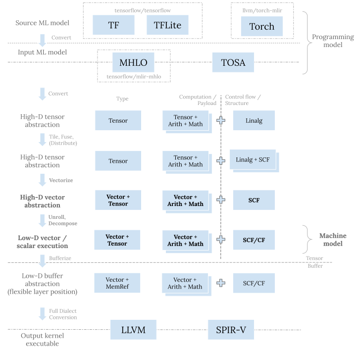

The vector dialect and related transformations are crucial components in the
MLIR CodeGen flow for machine learning (ML).
Today I will zoom in on it to explain its positioning in the overall
picture, characteristics, important operations and transformations,
and best practices of using it based on my experiences.
Positioning and Purpose
Positioning
MLIR CodeGen follows a progressive approach; it has more layers of abstractions
than other framework or compiler stacks.
Refreshing the CodeGen flow introduced in the previous blog post
and highlighting vector dialect related steps:

Purpose
Each layer in the above flow serves its own purpose:
- At the top level, dialects like
tf,tflite, andtorchare meant for ML framework integration; and dialects likemhloandtosaare meant for consolidating flexible framework op sets into (stable) input ML programs. - Down the stack, dialects like
linalgare for tiling the original program and mapping to the hardware compute hierarchy. - Dialects like
memrefare for handling memory planning and concrete data accesses. Its position in the flow is relatively flexible as it can happen either before or after the vector abstractions. - At the bottom of the stack is dialects like
llvmorspirvto exit the MLIR system for even lower level CodeGen and/or final program serialization.
The vector dialect and related patterns slot after the original problem tiling
and mapping to hardware compute units (CPU threads, GPU warps/subgroups, etc.).
There we are handling a similar yet smaller problem, from the perspective of a
single SIMD/SIMT compute unit.
The purpose of the vector level transformations is thus to further break down
the smaller scale problem and map to hardware registers and native vector
compute instructions.
Characteristics and Approaches
Characteristics
The positioning and purposes determine there are a few key characteristics of the
vector dialect:
- Given that we have already tiled the original problem, the dimension sizes
of each tile are static. So
vectordialect operates on static shapes. - Due to the semantic gap between high-dimension (high-D) tensors from upper
layers and low-dimension (low-D) native vectors on hardware targets,
vectordialect itself is “multi-level”—it has both target-agnostic and target-specific operations.
Expanding on that, from top to bottom, vector ops can be categorized into
three levels:
- Target-agnostic ops that operate on high-D vectors.
These operations (e.g.,
vector.transfer_readandvector.transfer_write) account for various cases and are more general and flexible. There are generally no direct hardware instructions for them. They serve as the lowering target from upper tensor layers, so that vectorizing tensor/buffer ops is mostly mechanical. - Target-specific ops that operate on low-D vectors.
These operations may map 1:1 to special hardware native vector instructions
(e.g.,
vector.contractover 2-D 16x16 vectors) and serve as snippets to match for generating them (e.g., NVIDIA TensorCore wmma ops). - Primitive ops that operate on 1-D vectors.
These operations (e.g.,
vector.insertelementandvector.extractelement) directly mirrorllvm/spirvcounterparts. They act as the most fine-grained and final form of vector decomposition, before existing tollvm/spirvops as mechanical conversions.
Note that the boundary between the above categories is a bit blurry;
sometimes depending on the operand vectors, we can put an op in different
categories.
For instance, vector.contract ops on 4-D vectors with transposed indexing maps
would fit into the first category, as compared to the previous example.
So this is just a rough division to make understanding the problem and flow
easier.
Anyway, putting common vector ops under this structure:
| Levels \ Class | Load/Store | Insert/Extract |
|---|---|---|
| Target-agnostic ops | vector.transfer_{read|write} |
vector.{insert|extract}_strided_slice |
| Target-specific ops | vector.{load|store} |
vector.{insert|extract} |
| Primitive ops | vector.masked{load|store} |
vector.{insert|extract}element |
| Levels \ Class | Transpose | Reduce/Contract | Elementwise |
|---|---|---|---|
| Target-agnostic ops | vector.contract |
||
| Target-specific ops | vector.transpose |
vector.multi_reduction |
|
| Primitive ops | vector.shuffle |
vetor.reduction |
vector.fma and arith/math ops |
The above tables listed vector ops commonly seen in CodeGen flows and indicate
the conversion direction for those ops.
(Note that in the above tables for ops that can straddle across categories,
I put them in the most common category they appear based on my experience.
Also note that it does not necessarily mean we must go through all levels there;
e.g., vector.transfer_read/vector.load can generate vector<4xf32> and thus
directly be converted to memref.load.
So again this is just a rough division to provide structure and make
understanding easier.)
There are also other common vector ops without so many levels, e.g.,
vector.splat and vector.broadcast for element duplication,
vector.{gather|scatter} for special data access modes,
vector.reshape and vector.shape_cast for shape management, and so on.
The vector dialect has a good overview and rationale docs well
worth a read.
Approaches
The above characteristics dictate the approaches at the vector level—static shapes enable unrolling as the mechanism for breaking down high-D vectors to low-D ones, while different levels of abstractions in the same dialect makes it easier to write lowerings after unrolling as mechanical op rewrites and canonicalizations. Next let’s talk about vector transformations in more detail.
Transformations
Transformations for the vector dialect are written as mechanical op rewrites and minimal canonicalization patterns as much as possible. The goal is to separate concerns and be composible; minimal patterns also makes testing and modification much easier.
It does, though, complicate developer experience—we need to orchestrate those general and flexible abstractions and minimal patterns in a coherent pass. It is tricky to get right. Let’s walk through the steps one by one.
Here I’ll use the pipeline for targeting mobile GPUs in
iree-org/iree@a8e4c38c and run it on the following matmul and
convolution:
func.func @dot(%lhs: tensor<128x256xf32>, %rhs: tensor<256x64xf32>,
%sub: tensor<128x64xf32>) -> tensor<128x64xf32> {
%0 = "mhlo.dot"(%lhs, %rhs) : (tensor<128x256xf32>, tensor<256x64xf32>) -> tensor<128x64xf32>
%1 = mhlo.subtract %0, %sub : tensor<128x64xf32>
return %0 : tensor<128x64xf32>
}
func.func @conv(%input: tensor<1x224x224x3xf32>, %filter: tensor<3x3x3x32xf32>,
%sub: tensor<1x112x112x32xf32>) -> tensor<1x112x112x32xf32> {
%0 = mhlo.convolution(%input, %filter)
dim_numbers = [b, 0, 1, f]x[0, 1, i, o]->[b, 0, 1, f],
window = {stride = [2, 2], pad = [[0, 1], [0, 1]], rhs_dilate = [1, 1]}
{batch_group_count = 1 : i64, feature_group_count = 1 : i64}
: (tensor<1x224x224x3xf32>, tensor<3x3x3x32xf32>) -> tensor<1x112x112x32xf32>
%1 = mhlo.subtract %0, %sub : tensor<1x112x112x32xf32>
return %1: tensor<1x112x112x32xf32>
}
The detailed output (for the CodeGen part) from iree-compile is in
this gist and this gist.
The pass source code is here.
While the pipeline is targeting mobile GPUs, it just invokes upstream patterns
(together with a few local patterns).
The general flow and order should apply to various other hardware targets.
(The bonus point of going down the SPIR-V path is that it stresses vector
transformations, as we cannot rely on the LLVM stack itself to clean up vector
ops.)
I’ll omit the steps before vectorization. You can see examples in the previous blog post. Zooming in on inside the innermost loop for distributing to GPU threads, inputs to vectorization for matmul and convolution:
%14 = tensor.extract_slice ...
%15 = tensor.extract_slice %arg5...
%16 = linalg.fill {...} ins(%cst : f32) outs(%15 : tensor<4x4xf32>) -> tensor<4x4xf32>
%17 = tensor.extract_slice ...
%18 = tensor.extract_slice ...
%19 = scf.for %arg6 = %c0 to %c256 step %c4 iter_args(%arg7 = %16) -> (tensor<4x4xf32>) {
%22 = tensor.extract_slice %17[0, %arg6] [4, 4] [1, 1] : tensor<4x256xf32> to tensor<4x4xf32>
%23 = tensor.extract_slice %18[%arg6, 0] [4, 4] [1, 1] : tensor<256x4xf32> to tensor<4x4xf32>
%24 = linalg.matmul {...}
ins(%22, %23 : tensor<4x4xf32>, tensor<4x4xf32>)
outs(%arg7 : tensor<4x4xf32>) -> tensor<4x4xf32>
scf.yield %24 : tensor<4x4xf32>
}
%20 = linalg.generic {
indexing_maps = [affine_map<(d0, d1) -> (d0, d1)>, affine_map<(d0, d1) -> (d0, d1)>],
iterator_types = ["parallel", "parallel"]
} ins(%14 : tensor<4x4xf32>) outs(%19 : tensor<4x4xf32>) attrs = {...} {
^bb0(%arg6: f32, %arg7: f32):
%22 = arith.subf %arg7, %arg6 : f32
linalg.yield %22 : f32
} -> tensor<4x4xf32>
%21 = tensor.insert_slice %20 into %arg5...
%26 = tensor.extract_slice ...
%27 = tensor.extract_slice %arg6...
%28 = linalg.fill {...} ins(%cst : f32) outs(%27 : tensor<1x1x2x4xf32>) -> tensor<1x1x2x4xf32>
%35 = tensor.extract_slice ...
%36 = tensor.extract_slice ...
%37 = scf.for %arg7 = %c0 to %c3 step %c1 iter_args(%arg8 = %28) -> (tensor<1x1x2x4xf32>) {
%40 = scf.for %arg9 = %c0 to %c3 step %c1 iter_args(%arg10 = %arg8) -> (tensor<1x1x2x4xf32>) {
%49 = tensor.extract_slice ...
%50 = tensor.pad %49 low[0, 0, 0, 0] high[0, %44, %48, 0] {
^bb0(%arg11: index, %arg12: index, %arg13: index, %arg14: index):
tensor.yield %cst : f32
} : tensor<1x?x?x3xf32> to tensor<1x1x3x3xf32>
%51 = tensor.extract_slice ...
%52 = linalg.conv_2d_nhwc_hwcf
{dilations = dense<1> : tensor<2xi64>, strides = dense<2> : tensor<2xi64>}
ins(%50, %51 : tensor<1x1x3x3xf32>, tensor<1x1x3x4xf32>)
outs(%arg10 : tensor<1x1x2x4xf32>) -> tensor<1x1x2x4xf32>
scf.yield %52 : tensor<1x1x2x4xf32>
}
scf.yield %40 : tensor<1x1x2x4xf32>
}
%38 = linalg.generic {
indexing_maps = [
affine_map<(d0, d1, d2, d3) -> (d0, d1, d2, d3)>,
affine_map<(d0, d1, d2, d3) -> (d0, d1, d2, d3)>
],
iterator_types = ["parallel", "parallel", "parallel", "parallel"]
} ins(%26 : tensor<1x1x2x4xf32>) outs(%37 : tensor<1x1x2x4xf32>) attrs = {...} {
^bb0(%arg7: f32, %arg8: f32):
%40 = arith.subf %arg8, %arg7 : f32
linalg.yield %40 : f32
} -> tensor<1x1x2x4xf32>
%39 = tensor.insert_slice %38 into %arg6...
Vectorization
After tiling, we have static shaped tiles. Vectorization then converts
these static shaped linalg/tensor/memref ops to vector ops of the same
shape.
In the process it creates vector.transfer_read ops to read data from tensors
or buffers into high-D vectors, creates vector/arith/math ops to compute
on them, and then creates vector.transfer_write ops to write the result back.
For linalg structured ops, we actually have one single pattern,
linalg::LinalgVectorizationPattern,
to vectorize them all.
This is due to the design behind linalg structured ops—named
ops are just “syntax sugar” over linalg.generic ops,
so all ops can be vectorized via vectorizeAsLinalgGeneric().
The only exception is convolution, because of special formed indexing maps
for input (more on this later).
For other linalg, tensor or memref ops, vectorization would mean dedicated
patterns. For example,
linalg::populatePadOpVectorizationPatterns()
collects tensor.pad vectorization patterns.
I also have another special pattern for vectorizing
tensor.pad ops with conditional reads in IREE, because the upstream ones
do not meet my particular needs.
So in summary, one would need to pull in these upstream vectorization patterns
to convert their target ops. These pattern can scatter in different
populate*Patterns() entry points.
Sometimes one would also need to write customized vectorization patterns.
After vectorization, outputs for the above matmul example and convolution example look like:
%14 = tensor.extract_slice ...
%15 = tensor.extract_slice %arg5...
%16 = vector.transfer_write %cst, %15[%c0, %c0] {in_bounds = [true, true]} : vector<4x4xf32>, tensor<4x4xf32>
%17 = tensor.extract_slice ...
%18 = tensor.extract_slice ...
%19 = scf.for %arg6 = %c0 to %c256 step %c4 iter_args(%arg7 = %16) -> (tensor<4x4xf32>) {
%25 = tensor.extract_slice %17[0, %arg6] [4, 4] [1, 1] : tensor<4x256xf32> to tensor<4x4xf32>
%26 = tensor.extract_slice %18[%arg6, 0] [4, 4] [1, 1] : tensor<256x4xf32> to tensor<4x4xf32>
%27 = vector.transfer_read %25[%c0, %c0], %cst_0 {in_bounds = [true, true]} : tensor<4x4xf32>, vector<4x4xf32>
%28 = vector.transfer_read %26[%c0, %c0], %cst_0 {in_bounds = [true, true]} : tensor<4x4xf32>, vector<4x4xf32>
%29 = vector.transfer_read %arg7[%c0, %c0], %cst_0 {in_bounds = [true, true]} : tensor<4x4xf32>, vector<4x4xf32>
%30 = vector.contract {
indexing_maps = [
affine_map<(d0, d1, d2) -> (d0, d2)>,
affine_map<(d0, d1, d2) -> (d2, d1)>,
affine_map<(d0, d1, d2) -> (d0, d1)>
],
iterator_types = ["parallel", "parallel", "reduction"],
kind = #vector.kind<add>
} %27, %28, %29 : vector<4x4xf32>, vector<4x4xf32> into vector<4x4xf32>
%31 = vector.transfer_write %30, %arg7[%c0, %c0] {in_bounds = [true, true]} : vector<4x4xf32>, tensor<4x4xf32>
scf.yield %31 : tensor<4x4xf32>
}
%20 = vector.transfer_read %14[%c0, %c0], %cst_0 {in_bounds = [true, true]} : tensor<4x4xf32>, vector<4x4xf32>
%21 = vector.transfer_read %19[%c0, %c0], %cst_0 {in_bounds = [true, true]} : tensor<4x4xf32>, vector<4x4xf32>
%22 = arith.subf %21, %20 : vector<4x4xf32>
%23 = vector.transfer_write %22, %19[%c0, %c0] {in_bounds = [true, true]} : vector<4x4xf32>, tensor<4x4xf32>
%24 = tensor.insert_slice %23 into %arg5...
%26 = tensor.extract_slice ...
%27 = tensor.extract_slice %arg6...
%28 = vector.transfer_write %cst, %27[%c0, %c0, %c0, %c0] {in_bounds = [true, true, true, true]} : vector<1x1x2x4xf32>, tensor<1x1x2x4xf32>
%35 = tensor.extract_slice ...
%36 = tensor.extract_slice ...
%37 = scf.for %arg7 = %c0 to %c3 step %c1 iter_args(%arg8 = %28) -> (tensor<1x1x2x4xf32>) {
%43 = scf.for %arg9 = %c0 to %c3 step %c1 iter_args(%arg10 = %arg8) -> (tensor<1x1x2x4xf32>) {
%50 = tensor.extract_slice ...
%56 = scf.if ... -> (vector<3xf32>) {
%93 = vector.transfer_read %50[%c0, %c0, %c0, %c0], %cst_2 {in_bounds = [true]} : tensor<1x?x?x3xf32>, vector<3xf32>
scf.yield %93 : vector<3xf32>
} else {
scf.yield %cst_1 : vector<3xf32>
}
%57 = vector.insert_strided_slice %56, %cst_0 {offsets = [0, 0], strides = [1]} : vector<3xf32> into vector<3x3xf32>
%61 = scf.if ... -> (vector<3xf32>) {
%93 = vector.transfer_read %50[%c0, %c0, %c1, %c0], %cst_2 {in_bounds = [true]} : tensor<1x?x?x3xf32>, vector<3xf32>
scf.yield %93 : vector<3xf32>
} else {
scf.yield %cst_1 : vector<3xf32>
}
%62 = vector.insert_strided_slice %61, %57 {offsets = [1, 0], strides = [1]} : vector<3xf32> into vector<3x3xf32>
%66 = scf.if ... -> (vector<3xf32>) {
%93 = vector.transfer_read %50[%c0, %c0, %c2, %c0], %cst_2 {in_bounds = [true]} : tensor<1x?x?x3xf32>, vector<3xf32>
scf.yield %93 : vector<3xf32>
} else {
scf.yield %cst_1 : vector<3xf32>
}
%67 = vector.insert_strided_slice %66, %62 {offsets = [2, 0], strides = [1]} : vector<3xf32> into vector<3x3xf32>
%68 = linalg.init_tensor [1, 1, 3, 3] : tensor<1x1x3x3xf32>
%69 = vector.transfer_write %67, %68[%c0, %c0, %c0, %c0] {in_bounds = [true, true]} : vector<3x3xf32>, tensor<1x1x3x3xf32>
%70 = tensor.extract_slice %36[%arg7, %arg9, 0, 0] [1, 1, 3, 4] [1, 1, 1, 1] : tensor<3x3x3x4xf32> to tensor<1x1x3x4xf32>
%71 = vector.transfer_read %70[%c0, %c0, %c0, %c0], %cst_2 {in_bounds = [true, true]} : tensor<1x1x3x4xf32>, vector<3x4xf32>
%72 = vector.extract_strided_slice %71 {offsets = [0, 0], sizes = [1, 4], strides = [1, 1]} : vector<3x4xf32> to vector<1x4xf32>
%73 = vector.extract_strided_slice %71 {offsets = [1, 0], sizes = [1, 4], strides = [1, 1]} : vector<3x4xf32> to vector<1x4xf32>
%74 = vector.extract_strided_slice %71 {offsets = [2, 0], sizes = [1, 4], strides = [1, 1]} : vector<3x4xf32> to vector<1x4xf32>
%75 = vector.transfer_read %69[%c0, %c0, %c0, %c0], %cst_2 {in_bounds = [true, true]} : tensor<1x1x3x3xf32>, vector<1x3xf32>
%76 = vector.transfer_read %arg10[%c0, %c0, %c0, %c0], %cst_2 {in_bounds = [true, true]} : tensor<1x1x2x4xf32>, vector<1x4xf32>
%77 = vector.extract_strided_slice %75 {offsets = [0, 0], sizes = [1, 1], strides = [1, 1]} : vector<1x3xf32> to vector<1x1xf32>
%78 = vector.contract {
indexing_maps = [
affine_map<(d0, d1, d2) -> (d0, d2)>,
affine_map<(d0, d1, d2) -> (d2, d1)>,
affine_map<(d0, d1, d2) -> (d0, d1)>
],
iterator_types = ["parallel", "parallel", "reduction"],
kind = #vector.kind<add>
} %77, %72, %76 : vector<1x1xf32>, vector<1x4xf32> into vector<1x4xf32>
%79 = vector.extract_strided_slice %75 {offsets = [0, 1], sizes = [1, 1], strides = [1, 1]} : vector<1x3xf32> to vector<1x1xf32>
%80 = vector.contract {...} %79, %73, %78 : vector<1x1xf32>, vector<1x4xf32> into vector<1x4xf32>
%81 = vector.extract_strided_slice %75 {offsets = [0, 2], sizes = [1, 1], strides = [1, 1]} : vector<1x3xf32> to vector<1x1xf32>
%82 = vector.contract {...} %81, %74, %80 : vector<1x1xf32>, vector<1x4xf32> into vector<1x4xf32>
%83 = vector.transfer_write %82, %arg10[%c0, %c0, %c0, %c0] {in_bounds = [true, true]} : vector<1x4xf32>, tensor<1x1x2x4xf32>
%84 = vector.transfer_read %69[%c0, %c0, %c2, %c0], %cst_2 {in_bounds = [true, true]} : tensor<1x1x3x3xf32>, vector<1x3xf32>
%85 = vector.transfer_read %arg10[%c0, %c0, %c1, %c0], %cst_2 {in_bounds = [true, true]} : tensor<1x1x2x4xf32>, vector<1x4xf32>
%86 = vector.extract_strided_slice %84 {offsets = [0, 0], sizes = [1, 1], strides = [1, 1]} : vector<1x3xf32> to vector<1x1xf32>
%87 = vector.contract {...} %86, %72, %85 : vector<1x1xf32>, vector<1x4xf32> into vector<1x4xf32>
%88 = vector.extract_strided_slice %84 {offsets = [0, 1], sizes = [1, 1], strides = [1, 1]} : vector<1x3xf32> to vector<1x1xf32>
%89 = vector.contract {...} %88, %73, %87 : vector<1x1xf32>, vector<1x4xf32> into vector<1x4xf32>
%90 = vector.extract_strided_slice %84 {offsets = [0, 2], sizes = [1, 1], strides = [1, 1]} : vector<1x3xf32> to vector<1x1xf32>
%91 = vector.contract {...} %90, %74, %89 : vector<1x1xf32>, vector<1x4xf32> into vector<1x4xf32>
%92 = vector.transfer_write %91, %83[%c0, %c0, %c1, %c0] {in_bounds = [true, true]} : vector<1x4xf32>, tensor<1x1x2x4xf32>
scf.yield %92 : tensor<1x1x2x4xf32>
}
scf.yield %43 : tensor<1x1x2x4xf32>
}
%38 = vector.transfer_read %26[%c0, %c0, %c0, %c0], %cst_2 {in_bounds = [true, true, true, true]} : tensor<1x1x2x4xf32>, vector<1x1x2x4xf32>
%39 = vector.transfer_read %37[%c0, %c0, %c0, %c0], %cst_2 {in_bounds = [true, true, true, true]} : tensor<1x1x2x4xf32>, vector<1x1x2x4xf32>
%40 = arith.subf %39, %38 : vector<1x1x2x4xf32>
%41 = vector.transfer_write %40, %37[%c0, %c0, %c0, %c0] {in_bounds = [true, true, true, true]} : vector<1x1x2x4xf32>, tensor<1x1x2x4xf32>
%42 = tensor.insert_slice %41 into %arg6...
Convolution has much more ops generated than matmul, as it’s more complicated
than matmul—we have fused padding in the above that contributes to all those
scf.if conditional reads.
More fundamentally, it’s due to the convolution computation.
Here it’s worth touching on one key property of various powerful ops involved
in the above: they all support using indexing map to express access patterns;
this includes various linalg structured ops, vector transfer ops, and
vector.contract.
These indexing maps are abstractions that can embed transposition, model various
modes of load/store from memory, and so on.
Though, there is a difference: vector ops require their indexing maps to
be projected permutation (i.e., a subset/projection of a symbol-less permutation
map), while linalg structured ops do not require that.
It’s understandable given that vector ops are more close to the machine model
so their abstractions are subject to more restrictions and enjoy less
flexibility than upper layers.
Looking at indexing maps for linalg.matmul and
linalg.conv2d:
- affine_map<(m, n, k)[s0, s1, s2] -> (m, k)>
- affine_map<(m, n, k)[s0, s1, s2] -> (k, n)>
- affine_map<(m, n, k)[s0, s1, s2] -> (m, n)>
// oh/ow: output height/width, fh/fw: filter height/width
// sh/sw: stride height/width, dh/dw: dilation height/width
// ic/oc: input/output channel, n: batch
- affine_map<(n, oh, ow, oc, fh, fw, ic)[s0, s1, s2, s3, dh, s5, sw, s7, dw, s9, s10]
-> (n, oh * sh + fh * dh, ow * sw + fw * dw, ic)>
- affine_map<(n, oh, ow, oc, fh, fw, ic)[s0, s1, sh, s3, dh, s5, sw, s7, dw, s9, s10]
-> (fh, fw, ic, oc)>
- affine_map<(n, oh, ow, oc, fh, fw, ic)[s0, s1, sh, s3, dh, s5, sw, s7, dw, s9, s10]
-> (n, oh, ow, oc)>
Convolution’s input has an access pattern of (n, oh * sh + fh * dh, ow * sw + fw * dw, ic), which is not representable in vector op indexing
maps.
Note that one common trick for convolution is to convert 1x1 filter convolutions
into matmul.
Following similar thoughts here, if we tile both filter window dimensions by
tile size 1, the convolution would have a 1x1 filter, which would allow us
to vectorize it like a matmul!
From the perspective of indexing maps, 1x1 filter would have fh == fw == 0,
so the indexing map for input would be (n, oh * sh, ow * sw, ic), where
sh and sw are constant.
That’s why we see two extra loops (with induction variable %arg7 and %arg9)
for convolution in the above.
However, tiling filter window dimensions is just part of the story.
We still see strided access to convolution input if the stride (sh/sw) is
not 1.
So we’d need to further unroll along output window dimensions (oh/ow) to
simplify the problem. Now the input indexing map would become
(n, <constant>, <constant>, ic), that’s exactly like matmul (m, k).
The unrolling along output window dimensions is performed as part of the vectorization pattern. Normally we would not want to do this, as we would like the vectorization pattern to be minimal and mechanical. And there are dedicated unrolling vector patterns (which I’ll come to later). However, for convolution that’s not possible right now. This remains a place we can improve in the future.
After vectorization, convolution is also converted to vector.contract.
Albeit more complicated, it’s fundamentally similar to the matmul case.
So from now on I’ll only focus on the matmul case.
(You can still follow the convolution IR conversion dump here.)
Unrolling
The next major step after vectorization is unrolling.
As said before, because of static shapes, we can leverage unrolling to decompose
high-D vector ops to low-D ones.
This matches the level the vector dialect is modeling and the purpose it’s
serving—utilizing registers and native vector instructions to the best on
a single SIMD/SIMT compute unit.
Unrolling would fit large vectors into hardware target-specific vectors and
create enough vector operations to occupy SIMD/SIMT units.
In MLIR, vector unrolling patterns are populated via
vector::populateVectorUnrollPatterns() and
implemented separately for different vector ops.
Unrollable ops implement the VectorUnrollOpInterface
and specialize the getShapeForUnroll() method to indicate which operand/result
vector shape should be the anchor (original shape) for unrolling.
Unrolling is controlled by UnrollVectorOptions.
Importantly it has setNativeShapeFn() which accepts a function for specifying
the native vector size of various vector ops.
This is where we control the unrolling to break down large vectors.
For example, for vector.contract we can set sizes for all dimensions to 1,
except for the last parallel dimension, where we can set as 4.
This would unroll all vector.contract ops down to 4-element vector and
so that eventually we can lower it to vector.fma ops.
Note that unrolling for transfer ops (for memory access) and other ops (for
computation) might need different rules, especially for GPU.
For GPU, we typically want to do 128-bit loads for memory coalescing;
so we’d need to consider the element bitwidth to decide the native number of
elements, e.g., vector<4xf32> for f32, vector<8xf16> for f16.
Unrolling works by creating a chain of the same vector ops working on smaller
vectors extracted with vector.extract_strided_slice ops. Results are then
inserted back to a vector via vector.insert_strided_slice ops to yield the
original vector shape.
With it, the matmul example becomes:
%14 = tensor.extract_slice ...
%15 = tensor.extract_slice %arg5...
%16 = vector.extract_strided_slice %cst {offsets = [0, 0], sizes = [1, 4], strides = [1, 1]} : vector<4x4xf32> to vector<1x4xf32>
%17 = vector.transfer_write %16, %15[%c0, %c0] {in_bounds = [true, true]} : vector<1x4xf32>, tensor<4x4xf32>
%18 = vector.extract_strided_slice %cst {offsets = [1, 0], sizes = [1, 4], strides = [1, 1]} : vector<4x4xf32> to vector<1x4xf32>
%19 = vector.transfer_write %18, %17[%c1, %c0] {in_bounds = [true, true]} : vector<1x4xf32>, tensor<4x4xf32>
%20 = vector.extract_strided_slice %cst {offsets = [2, 0], sizes = [1, 4], strides = [1, 1]} : vector<4x4xf32> to vector<1x4xf32>
%21 = vector.transfer_write %20, %19[%c2, %c0] {in_bounds = [true, true]} : vector<1x4xf32>, tensor<4x4xf32>
%22 = vector.extract_strided_slice %cst {offsets = [3, 0], sizes = [1, 4], strides = [1, 1]} : vector<4x4xf32> to vector<1x4xf32>
%23 = vector.transfer_write %22, %21[%c3, %c0] {in_bounds = [true, true]} : vector<1x4xf32>, tensor<4x4xf32>
%24 = tensor.extract_slice %9[%arg2, 0] [4, 256] [1, 1] : tensor<8x256xf32> to tensor<4x256xf32>
%25 = tensor.extract_slice %10[0, %arg4] [256, 4] [1, 1] : tensor<256x32xf32> to tensor<256x4xf32>
%26 = scf.for %arg6 = %c0 to %c256 step %c4 iter_args(%arg7 = %23) -> (tensor<4x4xf32>) {
%44 = tensor.extract_slice ...
%45 = tensor.extract_slice ...
%46 = vector.transfer_read %44[%c0, %c0], %cst_0 {in_bounds = [true, true]} : tensor<4x4xf32>, vector<1x4xf32>
%47 = vector.transfer_read %44[%c1, %c0], %cst_0 {in_bounds = [true, true]} : tensor<4x4xf32>, vector<1x4xf32>
%48 = vector.transfer_read %44[%c2, %c0], %cst_0 {in_bounds = [true, true]} : tensor<4x4xf32>, vector<1x4xf32>
%49 = vector.transfer_read %44[%c3, %c0], %cst_0 {in_bounds = [true, true]} : tensor<4x4xf32>, vector<1x4xf32>
%50 = vector.transfer_read %45[%c0, %c0], %cst_0 {in_bounds = [true, true]} : tensor<4x4xf32>, vector<1x4xf32>
%51 = vector.transfer_read %45[%c1, %c0], %cst_0 {in_bounds = [true, true]} : tensor<4x4xf32>, vector<1x4xf32>
%52 = vector.transfer_read %45[%c2, %c0], %cst_0 {in_bounds = [true, true]} : tensor<4x4xf32>, vector<1x4xf32>
%53 = vector.transfer_read %45[%c3, %c0], %cst_0 {in_bounds = [true, true]} : tensor<4x4xf32>, vector<1x4xf32>
%54 = vector.transfer_read %arg7[%c0, %c0], %cst_0 {in_bounds = [true, true]} : tensor<4x4xf32>, vector<1x4xf32>
%55 = vector.transfer_read %arg7[%c1, %c0], %cst_0 {in_bounds = [true, true]} : tensor<4x4xf32>, vector<1x4xf32>
%56 = vector.transfer_read %arg7[%c2, %c0], %cst_0 {in_bounds = [true, true]} : tensor<4x4xf32>, vector<1x4xf32>
%57 = vector.transfer_read %arg7[%c3, %c0], %cst_0 {in_bounds = [true, true]} : tensor<4x4xf32>, vector<1x4xf32>
%58 = vector.extract_strided_slice %46 {offsets = [0, 0], sizes = [1, 1], strides = [1, 1]} : vector<1x4xf32> to vector<1x1xf32>
%59 = vector.contract {...} %58, %50, %54 : vector<1x1xf32>, vector<1x4xf32> into vector<1x4xf32>
%60 = vector.extract_strided_slice %46 {offsets = [0, 1], sizes = [1, 1], strides = [1, 1]} : vector<1x4xf32> to vector<1x1xf32>
%61 = vector.contract {...} %60, %51, %59 : vector<1x1xf32>, vector<1x4xf32> into vector<1x4xf32>
%62 = vector.extract_strided_slice %46 {offsets = [0, 2], sizes = [1, 1], strides = [1, 1]} : vector<1x4xf32> to vector<1x1xf32>
%63 = vector.contract {...} %62, %52, %61 : vector<1x1xf32>, vector<1x4xf32> into vector<1x4xf32>
%64 = vector.extract_strided_slice %46 {offsets = [0, 3], sizes = [1, 1], strides = [1, 1]} : vector<1x4xf32> to vector<1x1xf32>
%65 = vector.contract {...} %64, %53, %63 : vector<1x1xf32>, vector<1x4xf32> into vector<1x4xf32>
%66 = vector.extract_strided_slice %47 {offsets = [0, 0], sizes = [1, 1], strides = [1, 1]} : vector<1x4xf32> to vector<1x1xf32>
%67 = vector.contract {...} %66, %50, %55 : vector<1x1xf32>, vector<1x4xf32> into vector<1x4xf32>
%68 = vector.extract_strided_slice %47 {offsets = [0, 1], sizes = [1, 1], strides = [1, 1]} : vector<1x4xf32> to vector<1x1xf32>
%69 = vector.contract {...} %68, %51, %67 : vector<1x1xf32>, vector<1x4xf32> into vector<1x4xf32>
%70 = vector.extract_strided_slice %47 {offsets = [0, 2], sizes = [1, 1], strides = [1, 1]} : vector<1x4xf32> to vector<1x1xf32>
%71 = vector.contract {...} %70, %52, %69 : vector<1x1xf32>, vector<1x4xf32> into vector<1x4xf32>
%72 = vector.extract_strided_slice %47 {offsets = [0, 3], sizes = [1, 1], strides = [1, 1]} : vector<1x4xf32> to vector<1x1xf32>
%73 = vector.contract {...} %72, %53, %71 : vector<1x1xf32>, vector<1x4xf32> into vector<1x4xf32>
%74 = vector.extract_strided_slice %48 {offsets = [0, 0], sizes = [1, 1], strides = [1, 1]} : vector<1x4xf32> to vector<1x1xf32>
%75 = vector.contract {...} %74, %50, %56 : vector<1x1xf32>, vector<1x4xf32> into vector<1x4xf32>
%76 = vector.extract_strided_slice %48 {offsets = [0, 1], sizes = [1, 1], strides = [1, 1]} : vector<1x4xf32> to vector<1x1xf32>
%77 = vector.contract {...} %76, %51, %75 : vector<1x1xf32>, vector<1x4xf32> into vector<1x4xf32>
%78 = vector.extract_strided_slice %48 {offsets = [0, 2], sizes = [1, 1], strides = [1, 1]} : vector<1x4xf32> to vector<1x1xf32>
%79 = vector.contract {...} %78, %52, %77 : vector<1x1xf32>, vector<1x4xf32> into vector<1x4xf32>
%80 = vector.extract_strided_slice %48 {offsets = [0, 3], sizes = [1, 1], strides = [1, 1]} : vector<1x4xf32> to vector<1x1xf32>
%81 = vector.contract {...} %80, %53, %79 : vector<1x1xf32>, vector<1x4xf32> into vector<1x4xf32>
%82 = vector.extract_strided_slice %49 {offsets = [0, 0], sizes = [1, 1], strides = [1, 1]} : vector<1x4xf32> to vector<1x1xf32>
%83 = vector.contract {...} %82, %50, %57 : vector<1x1xf32>, vector<1x4xf32> into vector<1x4xf32>
%84 = vector.extract_strided_slice %49 {offsets = [0, 1], sizes = [1, 1], strides = [1, 1]} : vector<1x4xf32> to vector<1x1xf32>
%85 = vector.contract {...} %84, %51, %83 : vector<1x1xf32>, vector<1x4xf32> into vector<1x4xf32>
%86 = vector.extract_strided_slice %49 {offsets = [0, 2], sizes = [1, 1], strides = [1, 1]} : vector<1x4xf32> to vector<1x1xf32>
%87 = vector.contract {...} %86, %52, %85 : vector<1x1xf32>, vector<1x4xf32> into vector<1x4xf32>
%88 = vector.extract_strided_slice %49 {offsets = [0, 3], sizes = [1, 1], strides = [1, 1]} : vector<1x4xf32> to vector<1x1xf32>
%89 = vector.contract {...} %88, %53, %87 : vector<1x1xf32>, vector<1x4xf32> into vector<1x4xf32>
%90 = vector.transfer_write %65, %arg7[%c0, %c0] {in_bounds = [true, true]} : vector<1x4xf32>, tensor<4x4xf32>
%91 = vector.transfer_write %73, %90[%c1, %c0] {in_bounds = [true, true]} : vector<1x4xf32>, tensor<4x4xf32>
%92 = vector.transfer_write %81, %91[%c2, %c0] {in_bounds = [true, true]} : vector<1x4xf32>, tensor<4x4xf32>
%93 = vector.transfer_write %89, %92[%c3, %c0] {in_bounds = [true, true]} : vector<1x4xf32>, tensor<4x4xf32>
scf.yield %93 : tensor<4x4xf32>
}
%27 = vector.transfer_read %14[%c0, %c0], %cst_0 {in_bounds = [true, true]} : tensor<4x4xf32>, vector<1x4xf32>
%28 = vector.transfer_read %14[%c1, %c0], %cst_0 {in_bounds = [true, true]} : tensor<4x4xf32>, vector<1x4xf32>
%29 = vector.transfer_read %14[%c2, %c0], %cst_0 {in_bounds = [true, true]} : tensor<4x4xf32>, vector<1x4xf32>
%30 = vector.transfer_read %14[%c3, %c0], %cst_0 {in_bounds = [true, true]} : tensor<4x4xf32>, vector<1x4xf32>
%31 = vector.transfer_read %26[%c0, %c0], %cst_0 {in_bounds = [true, true]} : tensor<4x4xf32>, vector<1x4xf32>
%32 = vector.transfer_read %26[%c1, %c0], %cst_0 {in_bounds = [true, true]} : tensor<4x4xf32>, vector<1x4xf32>
%33 = vector.transfer_read %26[%c2, %c0], %cst_0 {in_bounds = [true, true]} : tensor<4x4xf32>, vector<1x4xf32>
%34 = vector.transfer_read %26[%c3, %c0], %cst_0 {in_bounds = [true, true]} : tensor<4x4xf32>, vector<1x4xf32>
%35 = arith.subf %31, %27 : vector<1x4xf32>
%36 = arith.subf %32, %28 : vector<1x4xf32>
%37 = arith.subf %33, %29 : vector<1x4xf32>
%38 = arith.subf %34, %30 : vector<1x4xf32>
%39 = vector.transfer_write %35, %26[%c0, %c0] {in_bounds = [true, true]} : vector<1x4xf32>, tensor<4x4xf32>
%40 = vector.transfer_write %36, %39[%c1, %c0] {in_bounds = [true, true]} : vector<1x4xf32>, tensor<4x4xf32>
%41 = vector.transfer_write %37, %40[%c2, %c0] {in_bounds = [true, true]} : vector<1x4xf32>, tensor<4x4xf32>
%42 = vector.transfer_write %38, %41[%c3, %c0] {in_bounds = [true, true]} : vector<1x4xf32>, tensor<4x4xf32>
%43 = tensor.insert_slice %42 into %arg5...
This is a big step towards the final form, albeit still using high-level
target-agnostic vector ops.
There are quite a few cleanups we need to do before lowering those high-level
ops to low-level target-specific ops:
- These vectors are still more than 1-D, with leading unit dimensions. We would like to have just plain 1-D vectors.
- We have
vector.transfer_writeops zeroing the output tensor before the loop and thenvector.transfer_readops reading it from the tensor for the first iteration in the loop. This can be avoided by hosting out the transfer ops on the output vector and canceling write-read pairs at the beginning.
Handling high-D vectors
We need to handle the leading unit dimensions before hoisting—hoisting would make vectors to be loop carried; after that it’s not trivial to drop leading unit dimensions and perform cleanups, as the loop would become a “barrier” to patterns.
vector::populateCastAwayVectorLeadingOneDimPatterns()
collects patterns for such purposes.
We also have separate patterns for different vector ops there.
For certain cases we might see vector.insert_strided_slice inserting 1-D
native vectors into high-D larger vectors.
The above won’t handle it; we would need to use
vector::populateVectorInsertExtractStridedSliceDecompositionPatterns()
to break those remaining high-D vector insertions.
With these, the matmul example now becomes:
%14 = tensor.extract_slice ...
%15 = tensor.extract_slice %arg5...
%16 = vector.transfer_write %cst, %15[%c0, %c0] {in_bounds = [true]} : vector<4xf32>, tensor<4x4xf32>
%17 = vector.transfer_write %cst, %16[%c1, %c0] {in_bounds = [true]} : vector<4xf32>, tensor<4x4xf32>
%18 = vector.transfer_write %cst, %17[%c2, %c0] {in_bounds = [true]} : vector<4xf32>, tensor<4x4xf32>
%19 = vector.transfer_write %cst, %18[%c3, %c0] {in_bounds = [true]} : vector<4xf32>, tensor<4x4xf32>
%20 = tensor.extract_slice ...
%21 = tensor.extract_slice ...
%22 = scf.for %arg6 = %c0 to %c256 step %c4 iter_args(%arg7 = %19) -> (tensor<4x4xf32>) {
%40 = tensor.extract_slice ...
%41 = tensor.extract_slice ...
%42 = vector.transfer_read %40[%c0, %c0], %cst_0 {in_bounds = [true]} : tensor<4x4xf32>, vector<4xf32>
%43 = vector.transfer_read %40[%c1, %c0], %cst_0 {in_bounds = [true]} : tensor<4x4xf32>, vector<4xf32>
%44 = vector.transfer_read %40[%c2, %c0], %cst_0 {in_bounds = [true]} : tensor<4x4xf32>, vector<4xf32>
%45 = vector.transfer_read %40[%c3, %c0], %cst_0 {in_bounds = [true]} : tensor<4x4xf32>, vector<4xf32>
%46 = vector.transfer_read %41[%c0, %c0], %cst_0 {in_bounds = [true]} : tensor<4x4xf32>, vector<4xf32>
%47 = vector.broadcast %46 : vector<4xf32> to vector<1x4xf32>
%48 = vector.transfer_read %41[%c1, %c0], %cst_0 {in_bounds = [true]} : tensor<4x4xf32>, vector<4xf32>
%49 = vector.broadcast %48 : vector<4xf32> to vector<1x4xf32>
%50 = vector.transfer_read %41[%c2, %c0], %cst_0 {in_bounds = [true]} : tensor<4x4xf32>, vector<4xf32>
%51 = vector.broadcast %50 : vector<4xf32> to vector<1x4xf32>
%52 = vector.transfer_read %41[%c3, %c0], %cst_0 {in_bounds = [true]} : tensor<4x4xf32>, vector<4xf32>
%53 = vector.broadcast %52 : vector<4xf32> to vector<1x4xf32>
%54 = vector.transfer_read %arg7[%c0, %c0], %cst_0 {in_bounds = [true]} : tensor<4x4xf32>, vector<4xf32>
%55 = vector.transfer_read %arg7[%c1, %c0], %cst_0 {in_bounds = [true]} : tensor<4x4xf32>, vector<4xf32>
%56 = vector.transfer_read %arg7[%c2, %c0], %cst_0 {in_bounds = [true]} : tensor<4x4xf32>, vector<4xf32>
%57 = vector.transfer_read %arg7[%c3, %c0], %cst_0 {in_bounds = [true]} : tensor<4x4xf32>, vector<4xf32>
%58 = vector.extract_strided_slice %42 {offsets = [0], sizes = [1], strides = [1]} : vector<4xf32> to vector<1xf32>
%59 = vector.contract {...} %58, %47, %54 : vector<1xf32>, vector<1x4xf32> into vector<4xf32>
%60 = vector.extract_strided_slice %42 {offsets = [1], sizes = [1], strides = [1]} : vector<4xf32> to vector<1xf32>
%61 = vector.contract {...} %60, %49, %59 : vector<1xf32>, vector<1x4xf32> into vector<4xf32>
%62 = vector.extract_strided_slice %42 {offsets = [2], sizes = [1], strides = [1]} : vector<4xf32> to vector<1xf32>
%63 = vector.contract {...} %62, %51, %61 : vector<1xf32>, vector<1x4xf32> into vector<4xf32>
%64 = vector.extract_strided_slice %42 {offsets = [3], sizes = [1], strides = [1]} : vector<4xf32> to vector<1xf32>
%65 = vector.contract {...} %64, %53, %63 : vector<1xf32>, vector<1x4xf32> into vector<4xf32>
%66 = vector.extract_strided_slice %43 {offsets = [0], sizes = [1], strides = [1]} : vector<4xf32> to vector<1xf32>
%67 = vector.contract {...} %66, %47, %55 : vector<1xf32>, vector<1x4xf32> into vector<4xf32>
%68 = vector.extract_strided_slice %43 {offsets = [1], sizes = [1], strides = [1]} : vector<4xf32> to vector<1xf32>
%69 = vector.contract {...} %68, %49, %67 : vector<1xf32>, vector<1x4xf32> into vector<4xf32>
%70 = vector.extract_strided_slice %43 {offsets = [2], sizes = [1], strides = [1]} : vector<4xf32> to vector<1xf32>
%71 = vector.contract {...} %70, %51, %69 : vector<1xf32>, vector<1x4xf32> into vector<4xf32>
%72 = vector.extract_strided_slice %43 {offsets = [3], sizes = [1], strides = [1]} : vector<4xf32> to vector<1xf32>
%73 = vector.contract {...} %72, %53, %71 : vector<1xf32>, vector<1x4xf32> into vector<4xf32>
%74 = vector.extract_strided_slice %44 {offsets = [0], sizes = [1], strides = [1]} : vector<4xf32> to vector<1xf32>
%75 = vector.contract {...} %74, %47, %56 : vector<1xf32>, vector<1x4xf32> into vector<4xf32>
%76 = vector.extract_strided_slice %44 {offsets = [1], sizes = [1], strides = [1]} : vector<4xf32> to vector<1xf32>
%77 = vector.contract {...} %76, %49, %75 : vector<1xf32>, vector<1x4xf32> into vector<4xf32>
%78 = vector.extract_strided_slice %44 {offsets = [2], sizes = [1], strides = [1]} : vector<4xf32> to vector<1xf32>
%79 = vector.contract {...} %78, %51, %77 : vector<1xf32>, vector<1x4xf32> into vector<4xf32>
%80 = vector.extract_strided_slice %44 {offsets = [3], sizes = [1], strides = [1]} : vector<4xf32> to vector<1xf32>
%81 = vector.contract {...} %80, %53, %79 : vector<1xf32>, vector<1x4xf32> into vector<4xf32>
%82 = vector.extract_strided_slice %45 {offsets = [0], sizes = [1], strides = [1]} : vector<4xf32> to vector<1xf32>
%83 = vector.contract {...} %82, %47, %57 : vector<1xf32>, vector<1x4xf32> into vector<4xf32>
%84 = vector.extract_strided_slice %45 {offsets = [1], sizes = [1], strides = [1]} : vector<4xf32> to vector<1xf32>
%85 = vector.contract {...} %84, %49, %83 : vector<1xf32>, vector<1x4xf32> into vector<4xf32>
%86 = vector.extract_strided_slice %45 {offsets = [2], sizes = [1], strides = [1]} : vector<4xf32> to vector<1xf32>
%87 = vector.contract {...} %86, %51, %85 : vector<1xf32>, vector<1x4xf32> into vector<4xf32>
%88 = vector.extract_strided_slice %45 {offsets = [3], sizes = [1], strides = [1]} : vector<4xf32> to vector<1xf32>
%89 = vector.contract {...} %88, %53, %87 : vector<1xf32>, vector<1x4xf32> into vector<4xf32>
%90 = vector.transfer_write %65, %arg7[%c0, %c0] {in_bounds = [true]} : vector<4xf32>, tensor<4x4xf32>
%91 = vector.transfer_write %73, %90[%c1, %c0] {in_bounds = [true]} : vector<4xf32>, tensor<4x4xf32>
%92 = vector.transfer_write %81, %91[%c2, %c0] {in_bounds = [true]} : vector<4xf32>, tensor<4x4xf32>
%93 = vector.transfer_write %89, %92[%c3, %c0] {in_bounds = [true]} : vector<4xf32>, tensor<4x4xf32>
scf.yield %93 : tensor<4x4xf32>
}
%23 = vector.transfer_read %14[%c0, %c0], %cst_0 {in_bounds = [true]} : tensor<4x4xf32>, vector<4xf32>
%24 = vector.transfer_read %14[%c1, %c0], %cst_0 {in_bounds = [true]} : tensor<4x4xf32>, vector<4xf32>
%25 = vector.transfer_read %14[%c2, %c0], %cst_0 {in_bounds = [true]} : tensor<4x4xf32>, vector<4xf32>
%26 = vector.transfer_read %14[%c3, %c0], %cst_0 {in_bounds = [true]} : tensor<4x4xf32>, vector<4xf32>
%27 = vector.transfer_read %22[%c0, %c0], %cst_0 {in_bounds = [true]} : tensor<4x4xf32>, vector<4xf32>
%28 = vector.transfer_read %22[%c1, %c0], %cst_0 {in_bounds = [true]} : tensor<4x4xf32>, vector<4xf32>
%29 = vector.transfer_read %22[%c2, %c0], %cst_0 {in_bounds = [true]} : tensor<4x4xf32>, vector<4xf32>
%30 = vector.transfer_read %22[%c3, %c0], %cst_0 {in_bounds = [true]} : tensor<4x4xf32>, vector<4xf32>
%31 = arith.subf %27, %23 : vector<4xf32>
%32 = arith.subf %28, %24 : vector<4xf32>
%33 = arith.subf %29, %25 : vector<4xf32>
%34 = arith.subf %30, %26 : vector<4xf32>
%35 = vector.transfer_write %31, %22[%c0, %c0] {in_bounds = [true]} : vector<4xf32>, tensor<4x4xf32>
%36 = vector.transfer_write %32, %35[%c1, %c0] {in_bounds = [true]} : vector<4xf32>, tensor<4x4xf32>
%37 = vector.transfer_write %33, %36[%c2, %c0] {in_bounds = [true]} : vector<4xf32>, tensor<4x4xf32>
%38 = vector.transfer_write %34, %37[%c3, %c0] {in_bounds = [true]} : vector<4xf32>, tensor<4x4xf32>
%39 = tensor.insert_slice %38 into %arg5...
All vectors are 1-D 1/4 elements now! Next we can perform hoisting given the clean types.
Hoisting
Hoisting transfer ops works by inspecting loop carried tensors to see whether
we have a vector.transfer_read op at the beginning and a
vector.transfer_write op at the end. The indices should be static.
If so we can hoist such transfer ops out of the loop.
This is done via linalg::hoistRedundantVectorTransfersOnTensor()
(for tensors) and linalg::hoistRedundantVectorTransfers()
(for buffers).
With it, now the example looks like:
%15 = tensor.extract_slice ...
%16 = tensor.extract_slice %arg5...
%17 = vector.transfer_write %cst, %16[%c0, %c0] {in_bounds = [true]} : vector<4xf32>, tensor<4x4xf32>
%18 = vector.transfer_write %cst, %17[%c1, %c0] {in_bounds = [true]} : vector<4xf32>, tensor<4x4xf32>
%19 = vector.transfer_write %cst, %18[%c2, %c0] {in_bounds = [true]} : vector<4xf32>, tensor<4x4xf32>
%20 = vector.transfer_write %cst, %19[%c3, %c0] {in_bounds = [true]} : vector<4xf32>, tensor<4x4xf32>
%21 = tensor.extract_slice ...
%22:4 = scf.for %arg6 = %c0 to %c256 step %c4
iter_args(%arg7 = %cst, %arg8 = %cst, %arg9 = %cst, %arg10 = %cst)
-> (vector<4xf32>, vector<4xf32>, vector<4xf32>, vector<4xf32>) {
%40 = tensor.extract_slice ...
%41 = tensor.extract_slice ...
%42 = vector.transfer_read %40[%c0, %c0], %cst_0 {in_bounds = [true]} : tensor<4x4xf32>, vector<4xf32>
%43 = vector.transfer_read %40[%c1, %c0], %cst_0 {in_bounds = [true]} : tensor<4x4xf32>, vector<4xf32>
%44 = vector.transfer_read %40[%c2, %c0], %cst_0 {in_bounds = [true]} : tensor<4x4xf32>, vector<4xf32>
%45 = vector.transfer_read %40[%c3, %c0], %cst_0 {in_bounds = [true]} : tensor<4x4xf32>, vector<4xf32>
%46 = vector.transfer_read %41[%c0, %c0], %cst_0 {in_bounds = [true]} : tensor<4x4xf32>, vector<4xf32>
%47 = vector.broadcast %46 : vector<4xf32> to vector<1x4xf32>
%48 = vector.transfer_read %41[%c1, %c0], %cst_0 {in_bounds = [true]} : tensor<4x4xf32>, vector<4xf32>
%49 = vector.broadcast %48 : vector<4xf32> to vector<1x4xf32>
%50 = vector.transfer_read %41[%c2, %c0], %cst_0 {in_bounds = [true]} : tensor<4x4xf32>, vector<4xf32>
%51 = vector.broadcast %50 : vector<4xf32> to vector<1x4xf32>
%52 = vector.transfer_read %41[%c3, %c0], %cst_0 {in_bounds = [true]} : tensor<4x4xf32>, vector<4xf32>
%53 = vector.broadcast %52 : vector<4xf32> to vector<1x4xf32>
%54 = vector.extract_strided_slice %42 {offsets = [0], sizes = [1], strides = [1]} : vector<4xf32> to vector<1xf32>
%55 = vector.contract {...} %54, %47, %arg10 : vector<1xf32>, vector<1x4xf32> into vector<4xf32>
%56 = vector.extract_strided_slice %42 {offsets = [1], sizes = [1], strides = [1]} : vector<4xf32> to vector<1xf32>
%57 = vector.contract {...} %56, %49, %55 : vector<1xf32>, vector<1x4xf32> into vector<4xf32>
%58 = vector.extract_strided_slice %42 {offsets = [2], sizes = [1], strides = [1]} : vector<4xf32> to vector<1xf32>
%59 = vector.contract {...} %58, %51, %57 : vector<1xf32>, vector<1x4xf32> into vector<4xf32>
%60 = vector.extract_strided_slice %42 {offsets = [3], sizes = [1], strides = [1]} : vector<4xf32> to vector<1xf32>
%61 = vector.contract {...} %60, %53, %59 : vector<1xf32>, vector<1x4xf32> into vector<4xf32>
%62 = vector.extract_strided_slice %43 {offsets = [0], sizes = [1], strides = [1]} : vector<4xf32> to vector<1xf32>
%63 = vector.contract {...} %62, %47, %arg9 : vector<1xf32>, vector<1x4xf32> into vector<4xf32>
%64 = vector.extract_strided_slice %43 {offsets = [1], sizes = [1], strides = [1]} : vector<4xf32> to vector<1xf32>
%65 = vector.contract {...} %64, %49, %63 : vector<1xf32>, vector<1x4xf32> into vector<4xf32>
%66 = vector.extract_strided_slice %43 {offsets = [2], sizes = [1], strides = [1]} : vector<4xf32> to vector<1xf32>
%67 = vector.contract {...} %66, %51, %65 : vector<1xf32>, vector<1x4xf32> into vector<4xf32>
%68 = vector.extract_strided_slice %43 {offsets = [3], sizes = [1], strides = [1]} : vector<4xf32> to vector<1xf32>
%69 = vector.contract {...} %68, %53, %67 : vector<1xf32>, vector<1x4xf32> into vector<4xf32>
%70 = vector.extract_strided_slice %44 {offsets = [0], sizes = [1], strides = [1]} : vector<4xf32> to vector<1xf32>
%71 = vector.contract {...} %70, %47, %arg8 : vector<1xf32>, vector<1x4xf32> into vector<4xf32>
%72 = vector.extract_strided_slice %44 {offsets = [1], sizes = [1], strides = [1]} : vector<4xf32> to vector<1xf32>
%73 = vector.contract {...} %72, %49, %71 : vector<1xf32>, vector<1x4xf32> into vector<4xf32>
%74 = vector.extract_strided_slice %44 {offsets = [2], sizes = [1], strides = [1]} : vector<4xf32> to vector<1xf32>
%75 = vector.contract {...} %74, %51, %73 : vector<1xf32>, vector<1x4xf32> into vector<4xf32>
%76 = vector.extract_strided_slice %44 {offsets = [3], sizes = [1], strides = [1]} : vector<4xf32> to vector<1xf32>
%77 = vector.contract {...} %76, %53, %75 : vector<1xf32>, vector<1x4xf32> into vector<4xf32>
%78 = vector.extract_strided_slice %45 {offsets = [0], sizes = [1], strides = [1]} : vector<4xf32> to vector<1xf32>
%79 = vector.contract {...} %78, %47, %arg7 : vector<1xf32>, vector<1x4xf32> into vector<4xf32>
%80 = vector.extract_strided_slice %45 {offsets = [1], sizes = [1], strides = [1]} : vector<4xf32> to vector<1xf32>
%81 = vector.contract {...} %80, %49, %79 : vector<1xf32>, vector<1x4xf32> into vector<4xf32>
%82 = vector.extract_strided_slice %45 {offsets = [2], sizes = [1], strides = [1]} : vector<4xf32> to vector<1xf32>
%83 = vector.contract {...} %82, %51, %81 : vector<1xf32>, vector<1x4xf32> into vector<4xf32>
%84 = vector.extract_strided_slice %45 {offsets = [3], sizes = [1], strides = [1]} : vector<4xf32> to vector<1xf32>
%85 = vector.contract {...} %84, %53, %83 : vector<1xf32>, vector<1x4xf32> into vector<4xf32>
scf.yield %85, %77, %69, %61 : vector<4xf32>, vector<4xf32>, vector<4xf32>, vector<4xf32>
}
%23 = vector.transfer_write %22#3, %20[%c0, %c0] {in_bounds = [true]} : vector<4xf32>, tensor<4x4xf32>
%24 = vector.transfer_write %22#2, %23[%c1, %c0] {in_bounds = [true]} : vector<4xf32>, tensor<4x4xf32>
%25 = vector.transfer_write %22#1, %24[%c2, %c0] {in_bounds = [true]} : vector<4xf32>, tensor<4x4xf32>
%26 = vector.transfer_write %22#0, %25[%c3, %c0] {in_bounds = [true]} : vector<4xf32>, tensor<4x4xf32>
%27 = vector.transfer_read %15[%c0, %c0], %cst_0 {in_bounds = [true]} : tensor<4x4xf32>, vector<4xf32>
%28 = vector.transfer_read %15[%c1, %c0], %cst_0 {in_bounds = [true]} : tensor<4x4xf32>, vector<4xf32>
%29 = vector.transfer_read %15[%c2, %c0], %cst_0 {in_bounds = [true]} : tensor<4x4xf32>, vector<4xf32>
%30 = vector.transfer_read %15[%c3, %c0], %cst_0 {in_bounds = [true]} : tensor<4x4xf32>, vector<4xf32>
%31 = arith.subf %22#3, %27 : vector<4xf32>
%32 = arith.subf %22#2, %28 : vector<4xf32>
%33 = arith.subf %22#1, %29 : vector<4xf32>
%34 = arith.subf %22#0, %30 : vector<4xf32>
%35 = vector.transfer_write %31, %26[%c0, %c0] {in_bounds = [true]} : vector<4xf32>, tensor<4x4xf32>
%36 = vector.transfer_write %32, %35[%c1, %c0] {in_bounds = [true]} : vector<4xf32>, tensor<4x4xf32>
%37 = vector.transfer_write %33, %36[%c2, %c0] {in_bounds = [true]} : vector<4xf32>, tensor<4x4xf32>
%38 = vector.transfer_write %34, %37[%c3, %c0] {in_bounds = [true]} : vector<4xf32>, tensor<4x4xf32>
%39 = tensor.insert_slice %38 into %arg5...
Now we don’t need to go through tensors for initialization at the beginning and loop carried values are vectors.
This is pretty much all the major steps we need for preparing vector ops of the final form. What’s coming next is just lowering those high-level ops down to low-level ones.
Lowering
This step again needs to collect various patterns for different ops.
These patterns are in vector::populateVector*LoweringPatterns() variants.
For example, vector::populateVectorContractLoweringPatterns() for
vector.contract ops, vector::populateVectorTransposeLoweringPatterns()
for vector.transpose ops, and so on.
These patterns allow controls over directions of
the lowering, e.g., whether to lower vector.contract to
vector.outerproduct (good for GPU) or something else.
With those lowering patterns and more canonicalization, we have the final form of the IR:
%15 = tensor.extract_slice ...
%16 = tensor.extract_slice %arg5...
%17 = tensor.extract_slice ...
%18:4 = scf.for %arg6 = %c0 to %c256 step %c4
iter_args(%arg7 = %cst, %arg8 = %cst, %arg9 = %cst, %arg10 = %cst)
-> (vector<4xf32>, vector<4xf32>, vector<4xf32>, vector<4xf32>) {
%32 = tensor.extract_slice %13[0, %arg6] [4, 4] [1, 1] : tensor<4x256xf32> to tensor<4x4xf32>
%33 = tensor.extract_slice %17[%arg6, 0] [4, 4] [1, 1] : tensor<256x4xf32> to tensor<4x4xf32>
%34 = vector.transfer_read %32[%c0, %c0], %cst_0 {in_bounds = [true]} : tensor<4x4xf32>, vector<4xf32>
%35 = vector.transfer_read %32[%c1, %c0], %cst_0 {in_bounds = [true]} : tensor<4x4xf32>, vector<4xf32>
%36 = vector.transfer_read %32[%c2, %c0], %cst_0 {in_bounds = [true]} : tensor<4x4xf32>, vector<4xf32>
%37 = vector.transfer_read %32[%c3, %c0], %cst_0 {in_bounds = [true]} : tensor<4x4xf32>, vector<4xf32>
%38 = vector.transfer_read %33[%c0, %c0], %cst_0 {in_bounds = [true]} : tensor<4x4xf32>, vector<4xf32>
%39 = vector.transfer_read %33[%c1, %c0], %cst_0 {in_bounds = [true]} : tensor<4x4xf32>, vector<4xf32>
%40 = vector.transfer_read %33[%c2, %c0], %cst_0 {in_bounds = [true]} : tensor<4x4xf32>, vector<4xf32>
%41 = vector.transfer_read %33[%c3, %c0], %cst_0 {in_bounds = [true]} : tensor<4x4xf32>, vector<4xf32>
%42 = vector.extract %34[0] : vector<4xf32>
%43 = vector.splat %42 : vector<4xf32>
%44 = vector.fma %43, %38, %arg10 : vector<4xf32>
%45 = vector.extract %34[1] : vector<4xf32>
%46 = vector.splat %45 : vector<4xf32>
%47 = vector.fma %46, %39, %44 : vector<4xf32>
%48 = vector.extract %34[2] : vector<4xf32>
%49 = vector.splat %48 : vector<4xf32>
%50 = vector.fma %49, %40, %47 : vector<4xf32>
%51 = vector.extract %34[3] : vector<4xf32>
%52 = vector.splat %51 : vector<4xf32>
%53 = vector.fma %52, %41, %50 : vector<4xf32>
%54 = vector.extract %35[0] : vector<4xf32>
%55 = vector.splat %54 : vector<4xf32>
%56 = vector.fma %55, %38, %arg9 : vector<4xf32>
%57 = vector.extract %35[1] : vector<4xf32>
%58 = vector.splat %57 : vector<4xf32>
%59 = vector.fma %58, %39, %56 : vector<4xf32>
%60 = vector.extract %35[2] : vector<4xf32>
%61 = vector.splat %60 : vector<4xf32>
%62 = vector.fma %61, %40, %59 : vector<4xf32>
%63 = vector.extract %35[3] : vector<4xf32>
%64 = vector.splat %63 : vector<4xf32>
%65 = vector.fma %64, %41, %62 : vector<4xf32>
%66 = vector.extract %36[0] : vector<4xf32>
%67 = vector.splat %66 : vector<4xf32>
%68 = vector.fma %67, %38, %arg8 : vector<4xf32>
%69 = vector.extract %36[1] : vector<4xf32>
%70 = vector.splat %69 : vector<4xf32>
%71 = vector.fma %70, %39, %68 : vector<4xf32>
%72 = vector.extract %36[2] : vector<4xf32>
%73 = vector.splat %72 : vector<4xf32>
%74 = vector.fma %73, %40, %71 : vector<4xf32>
%75 = vector.extract %36[3] : vector<4xf32>
%76 = vector.splat %75 : vector<4xf32>
%77 = vector.fma %76, %41, %74 : vector<4xf32>
%78 = vector.extract %37[0] : vector<4xf32>
%79 = vector.splat %78 : vector<4xf32>
%80 = vector.fma %79, %38, %arg7 : vector<4xf32>
%81 = vector.extract %37[1] : vector<4xf32>
%82 = vector.splat %81 : vector<4xf32>
%83 = vector.fma %82, %39, %80 : vector<4xf32>
%84 = vector.extract %37[2] : vector<4xf32>
%85 = vector.splat %84 : vector<4xf32>
%86 = vector.fma %85, %40, %83 : vector<4xf32>
%87 = vector.extract %37[3] : vector<4xf32>
%88 = vector.splat %87 : vector<4xf32>
%89 = vector.fma %88, %41, %86 : vector<4xf32>
scf.yield %89, %77, %65, %53 : vector<4xf32>, vector<4xf32>, vector<4xf32>, vector<4xf32>
}
%19 = vector.transfer_read %15[%c0, %c0], %cst_0 {in_bounds = [true]} : tensor<4x4xf32>, vector<4xf32>
%20 = vector.transfer_read %15[%c1, %c0], %cst_0 {in_bounds = [true]} : tensor<4x4xf32>, vector<4xf32>
%21 = vector.transfer_read %15[%c2, %c0], %cst_0 {in_bounds = [true]} : tensor<4x4xf32>, vector<4xf32>
%22 = vector.transfer_read %15[%c3, %c0], %cst_0 {in_bounds = [true]} : tensor<4x4xf32>, vector<4xf32>
%23 = arith.subf %18#3, %19 : vector<4xf32>
%24 = arith.subf %18#2, %20 : vector<4xf32>
%25 = arith.subf %18#1, %21 : vector<4xf32>
%26 = arith.subf %18#0, %22 : vector<4xf32>
%27 = vector.transfer_write %23, %16[%c0, %c0] {in_bounds = [true]} : vector<4xf32>, tensor<4x4xf32>
%28 = vector.transfer_write %24, %27[%c1, %c0] {in_bounds = [true]} : vector<4xf32>, tensor<4x4xf32>
%29 = vector.transfer_write %25, %28[%c2, %c0] {in_bounds = [true]} : vector<4xf32>, tensor<4x4xf32>
%30 = vector.transfer_write %26, %29[%c3, %c0] {in_bounds = [true]} : vector<4xf32>, tensor<4x4xf32>
%31 = tensor.insert_slice %30 into %arg5...
Closing Words
In the above I walked through the steps involved in vector transformations. There are still more details not covered. To understand those, please feel free to take a look at the source code, which contains comments explaining each step.
In general vector dialect and patterns are key components in the whole flow
to CodeGen good code for a single compute unit.
Properly using it requires careful sequencing of the patterns though.
Hopefully this blog post provides some hints on how to do that.
There are also other vector dialect features I didn’t cover in the above,
like using vector.warp_execute_on_lane_0 to
progressively turn SIMD programming into SIMT by moving ops inside the region
(for SIMD) outside (for SIMT) to distribute to GPU threads.
Till next time I guess. 😊